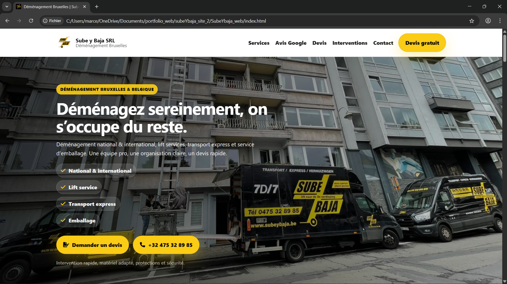
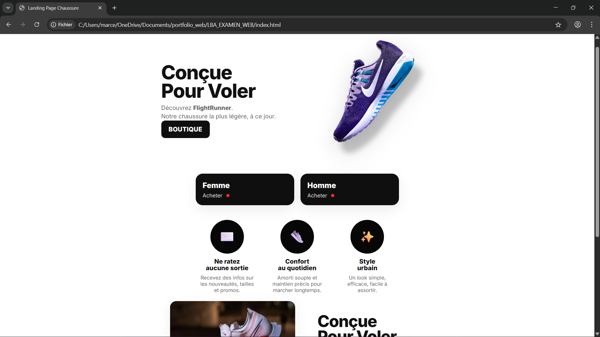
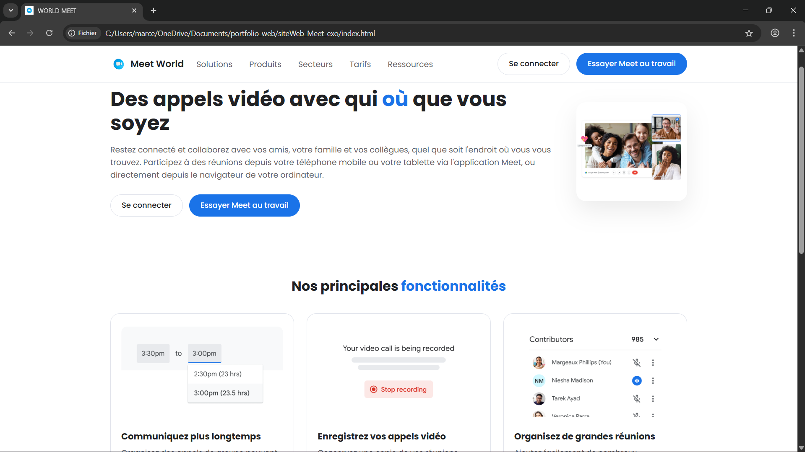

Projet JavaScript
Création d’un site vitrine pour une entreprise de déménagement avec navigation responsive, section services et formulaire de contact.
Technologies : HTML / CSS / JavaScript
Voir le projetDéveloppeur Web Junior
Je suis actuellement en formation en développement web et je travaille principalement avec HTML, CSS et JavaScript. Je souhaite continuer à développer mes compétences et apprendre davantage sur WordPress et le développement front-end.
Voir mes projetsPassionné par le développement web, j’aime créer des interfaces modernes et responsives. Je suis motivé pour apprendre et progresser dans un environnement professionnel et collaboratif.

Création d’un site vitrine pour une entreprise de déménagement avec navigation responsive, section services et formulaire de contact.
Technologies : HTML / CSS / JavaScript
Voir le projet
Réalisation d’une page moderne avec mise en page responsive, call-to-action et sections visuelles.
Technologies : HTML / CSS
Voir le projet
Mini projet interactif permettant de manipuler le DOM et d’améliorer mes compétences en HTML/CSS
Technologies :HTML / CSS
Voir le projetEmail : Marcelo.bonilla@outlook.be
Ville : Bruxelles